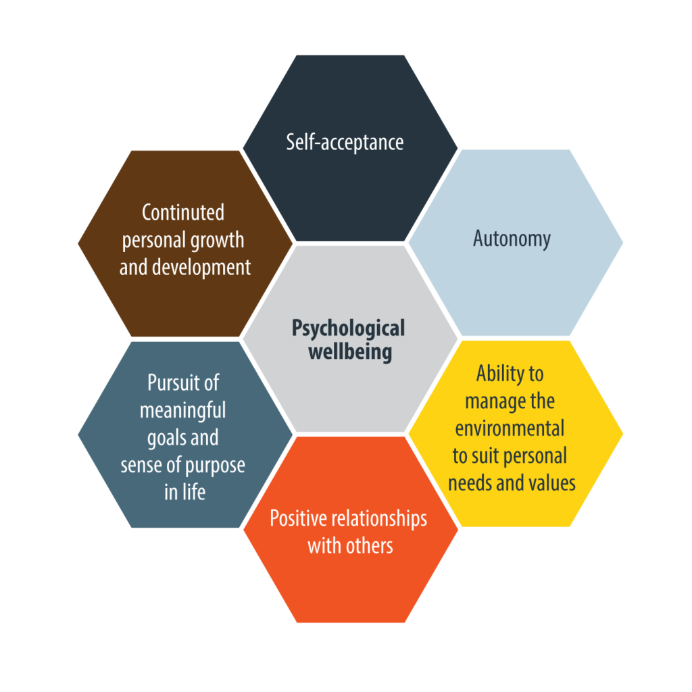

Health refers to a person’s mental or physical condition, particularly in relation to illness or injury. Well-being is a more holistic view, encompassing a person’s physical, mental, emotional, spiritual and social health. The concept of well-being includes happiness and the way the individual feels about themself.
Factors affecting health and well-being
Maintaining health and well-being requires a range of factors. Select each factor heading to learn more about it.
Physical
A healthy body and brain is an important part of overall health and well-being. Problems associated with illness or injury can lead to further health issues. Chronic pain, such as that associated with arthritis, can mean that the resident is unable to participate in normal day-to-day activities, which can also lead to mental health issues. To maintain physical health, residents need to maintain a balanced diet and exercise.
Social
Social engagement with others helps to strengthen the resident’s sense of self and feelings of belonging. In a residential aged care facility, social interactions can occur between residents and visitors, staff, volunteers, people involved in activities and other residents.
Cultural
Culture is an important part of belonging and connectedness. We all feel a sense of identity that includes our culture. Activities related to cultural practices can help residents to feel that they are an important and productive member of society. This has a positive impact on health and wellbeing.
Example
Frank (right) loves traditional Irish music. He moved to Australia from Ireland when he was 30. Frank is very passionate about his Irish heritage. To help Frank embrace his culture, the facility always tries to include a few Irish songs in their weekly sing-alongs. Frank has dementia and singing these songs helps him to establish a connection to his culture. Frank is always happier after one of these sing-alongs.
Psychological
Psychological wellbeing refers to the mental and emotional state of the person. It involves the following.

Financial
Financial wellbeing is about having financial security and financial freedom of choice. The Federal Government subsidises the costs of moving into residential aged care facilities, but the residents also pay some fees and charges. The amount they pay depends on their income and assets.
Financial hardship has a significant impact on health and wellbeing. Financial hardship can lead to reduced access to services, increased risk of drug or alcohol abuse, worry about financial situation or reduced access to basic needs, such as clothing or medications. Some behavioural choices, such as smoking cigarettes, can cause further financial difficulties.
Spiritual
Spirituality is about the way we experience meaning and purpose in life. It applies to everyone, whether religious or not. For some people, religion offers a way to develop community understanding and worship. Spiritual involvement can help individuals to cope and build resilience. A 2005 study found that spirituality, religion and personal beliefs had a significant impact on a person’s quality of life.
Example
Frank (right) has been a practicing catholic all his life and visits church weekly. Going to church and listening to the music and sermons is calming for Frank, especially when he is struggling to understand what is going on.
Career / Occupation
Having a job or occupation, whether paid or unpaid, helps to give individuals a sense of purpose. Some people can find retirement difficult as they re-evaluate their sense of purpose.
Example
Living in a rural town, Dot (right) was a member of the Country Women’s Association (CWA). Through the CWA, Dot was involved in teaching knitting and other crafts to younger women. Dot helped to run a craft group that sold their works to receive money for charities. Now that Dot is in a residential aged care facility, she enjoys sharing her crafting skills with other residents. Dot participates in craft activities regularly. This helps her to keep building her skills and to continue a meaningful occupation.